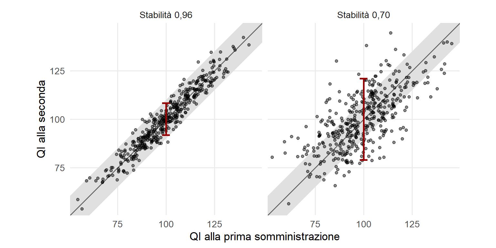
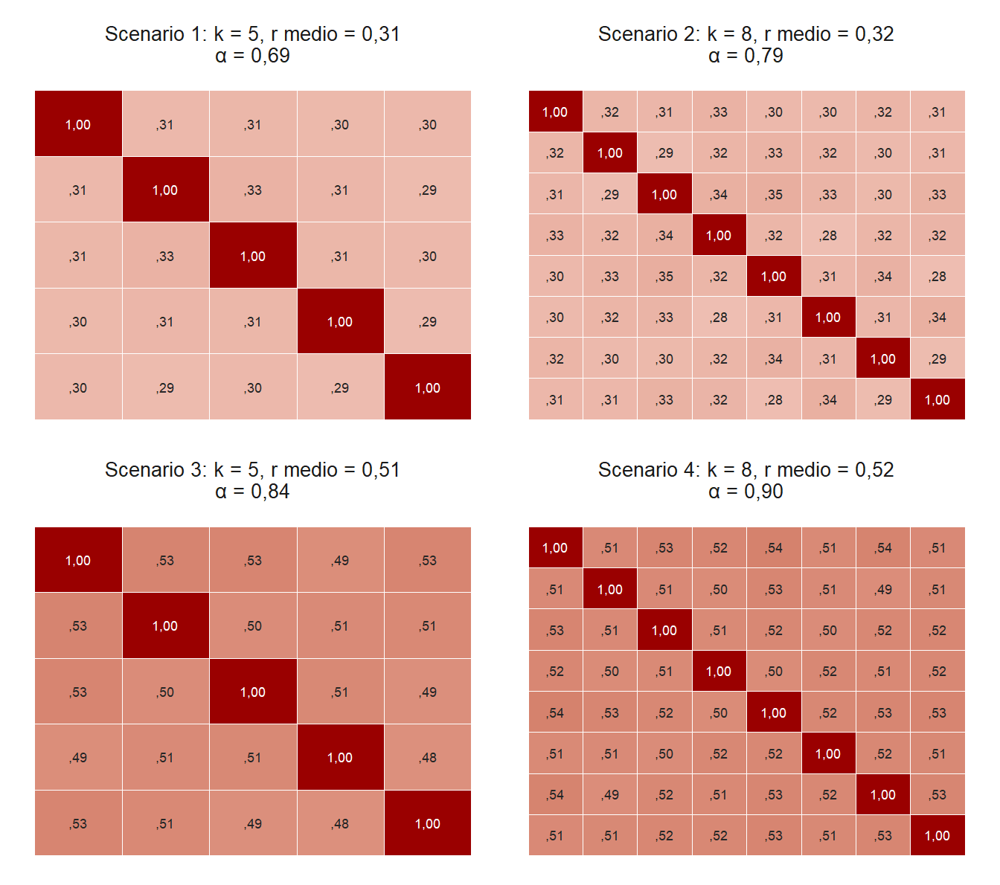
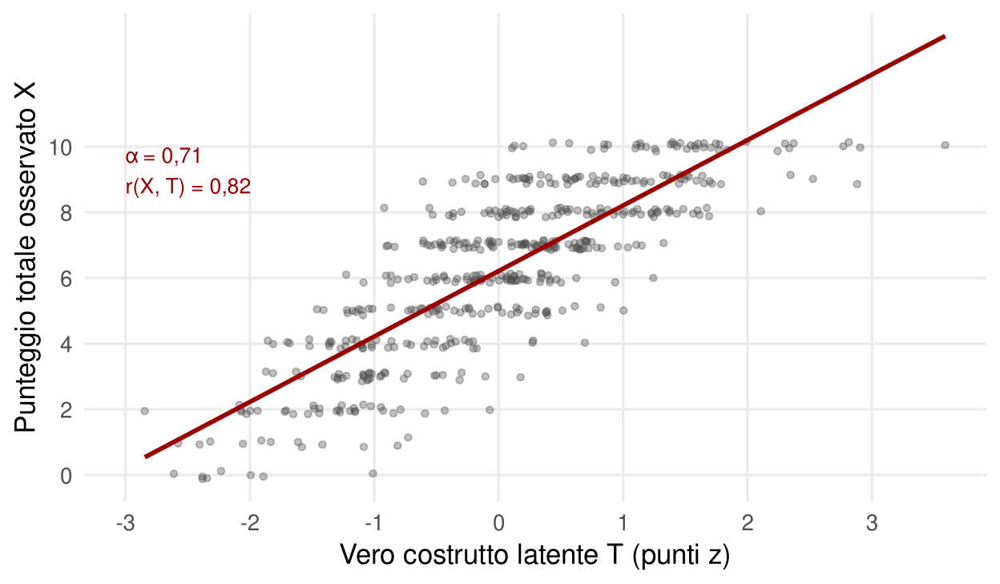
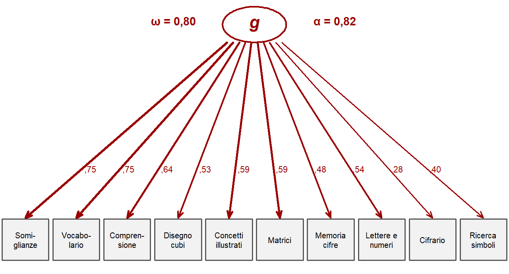
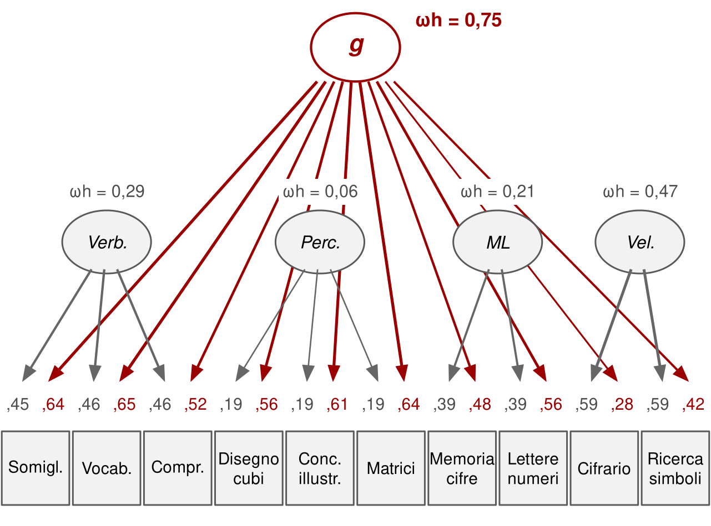

14 Quando una misura è buona
Strumenti. Le due parti «Strumenti» raccolgono le basi tecniche del libro. I loro capitoli si possono leggere da soli, in qualsiasi momento, oppure saltare: i capitoli concettuali restano comprensibili e vi rimandano, con brevi note in verde, quando un passaggio richiede uno strumento in più.
Questo capitolo tratta i criteri con cui si giudica un test: validità, attendibilità come stabilità e come consistenza interna, errore di misura, invarianza. Presuppone la correlazione e il modello a un fattore del capitolo sul fattore g. Serve per interpretare un singolo punteggio, per i correttivi statistici del capitolo sul lavoro e per la valutazione nel neurosviluppo.
Una bilancia da cucina che sbaglia di quindici grammi è inutile per dosare il lievito. Una bilancia pesapersone che sbaglia di tre chili è inutile per seguire una dieta. Entrambe misurano il peso, e nessuno lo mette in dubbio. Eppure nessuno le userebbe per quegli scopi. Misurare la cosa giusta non basta: serve misurarla abbastanza bene per l’uso che se ne fa. In psicologia lo stesso ragionamento vale per ogni test, con una complicazione: ciò che vogliamo misurare non si vede.
Le abilità cognitive sono variabili latenti. Le stimiamo a partire da risposte a compiti, e il punteggio che ne ricaviamo è il risultato di una catena di inferenze. Come facciamo a sapere che quel numero va bene? La psicometria ha sviluppato una serie di criteri. Questo capitolo li presenta e li applica ai test di intelligenza, che nel panorama della misura psicologica hanno indici di qualità fra i più alti. Proprio per questo è utile vedere dove anche loro incontrano dei limiti.
14.1 Quattro domande su un test
I criteri principali possono essere riassunti in quattro domande.
- Validità. Il test misura davvero ciò che dovrebbe misurare, e permette le interpretazioni e le previsioni per cui viene usato?
- Attendibilità, o affidabilità. Il punteggio è preciso e stabile? Se ripetessi la misura, otterrei un risultato simile?
- Sensibilità. Lo strumento distingue bene i diversi livelli di abilità? Se è usato a scopo diagnostico, separa bene chi ha una condizione da chi non ce l’ha?
- Robustezza. Il test resta valido e attendibile anche in condizioni non ideali: una popolazione diversa da quella di riferimento, una condizione del neurosviluppo, una somministrazione non standard, una ripetizione ravvicinata?
Le batterie di intelligenza ben costruite superano bene le prime tre prove. La quarta dipende dalla situazione: nessun test è robusto in ogni circostanza, ma esistono contromisure note. Vediamole una per una.
14.2 Validità: che cosa misura il test?
Nella formulazione moderna la validità non è una proprietà del test, ma del sostegno che evidenze e teoria offrono a una specifica interpretazione dei punteggi per un certo uso (American Educational Research Association et al., 2014). Si accumula attraverso diversi tipi di evidenza.
La validità di contenuto chiede se le prove coprono in modo appropriato il dominio da misurare. Per l’intelligenza la questione ha una storia curiosa. Spearman osservò che quasi qualunque compito cognitivo, purché impegnativo, fornisce informazioni sul fattore generale. Chiamò questo fenomeno indifferenza dell’indicatore (Spearman, 1927). Costruire un test che misuri il fattore generale è quindi, in un certo senso, facile: basta combinare prove abbastanza diverse e bilanciarle in modo sensato (Warne, 2020). Le batterie moderne preferiscono comunque una base teorica esplicita, di solito il modello gerarchico descritto nel capitolo sui modelli gerarchici.
La validità strutturale chiede se le correlazioni fra item, subtest e indici seguono un modello teorico plausibile. Si verifica con l’analisi fattoriale confermativa, valutando quanto il modello si adatta ai dati.
La validità convergente chiede se il test correla con altri test dello stesso costrutto. Per l’intelligenza è eccellente: i QI ottenuti con strumenti diversi correlano in genere almeno 0,70, spesso molto di più.
La validità predittiva chiede se il punteggio prevede esiti che, in base alla teoria, dovrebbe prevedere: rendimento scolastico, formazione e prestazione lavorativa, salute. È il punto di forza dei test di intelligenza, e vi dedicheremo un’intera parte del libro.
La validità discriminante chiede se il test non misuri anche cose che non dovrebbe misurare. Per l’intelligenza è un criterio delicato: un’abilità generale ha molte ragioni teoriche per correlare con molte altre variabili, e una correlazione con lo status socioeconomico, per esempio, non è di per sé un segno di contaminazione.
Infine l’invarianza di misura chiede se il punteggio si interpreta allo stesso modo in gruppi diversi. Possiamo leggere il QI totale di un bambino con ADHD o con autismo come quello di un bambino a sviluppo tipico? E quello di un bambino cresciuto in un’altra lingua? Non è una proprietà fissa del test, ma della combinazione fra test, gruppo e interpretazione. Torneremo su questo punto nel capitolo sulla valutazione nel neurosviluppo.
14.3 Attendibilità come stabilità
Un modo diretto di valutare la precisione è somministrare lo stesso test due volte e correlare i punteggi. È l’attendibilità test-retest. Le differenze fra le due misure possono avere due origini: un errore casuale, legato a oscillazioni dell’attenzione, all’ora del giorno o alla stanchezza; oppure un cambiamento reale del funzionamento. Per il QI i cambiamenti reali a breve termine sono modesti. Esiste anche un effetto pratica, perché la seconda volta le prove sono meno nuove, ma è abbastanza prevedibile da poter essere considerato. In genere una stabilità sotto 0,70 si considera problematica, se si possono escludere cambiamenti reali.
Nei manuali tecnici delle batterie per adulti il QI totale, risomministrato dopo poche settimane, ha correlazioni test-retest attorno a 0,95. Sembra quasi perfetto. Ma che cosa significa per un singolo caso? La Figura 14.1 lo mostra con una simulazione. Anche con una stabilità di 0,96 la differenza tipica fra due somministrazioni è di circa quattro punti, e in un caso su venti supera gli otto. Con una stabilità di 0,70 la differenza tipica sale a circa dodici punti e in un caso su venti supera i venti.
In età evolutiva e su intervalli lunghi la stabilità è inferiore. In uno studio su 344 studenti valutati due volte con la WISC-IV a quasi tre anni di distanza, la stabilità del QI totale era 0,82, quella degli indici fra 0,65 e 0,76. Un quarto degli studenti aveva QI totali che differivano di dieci punti o più (Watkins & Smith, 2013). Una parte della variazione è certamente reale: i bambini cambiano, e una valutazione può dover essere aggiornata. Ma la conclusione pratica non cambia: un singolo punteggio, soprattutto di un indice, non è una fotografia definitiva.
Nel lungo periodo, però, la stabilità dell’ordinamento fra le persone è notevole. Nella coorte scozzese testata a 11 anni nel 1932 e ritestata quasi settant’anni dopo, la correlazione fra i punteggi alle due età era dell’ordine di 0,6–0,7 (Deary et al., 2000, 2004). Poche caratteristiche psicologiche mostrano una continuità simile lungo l’intera vita adulta.
14.4 Attendibilità come consistenza interna
Il secondo modo di stimare l’attendibilità non richiede due somministrazioni. Guarda alla coerenza fra le parti di un test: quanto gli item, o i subtest, misurano la stessa cosa.
Il ragionamento parte dalla teoria classica dei test. Il punteggio osservato X è la somma di un punteggio vero T, che rappresenta il costrutto latente, e di un errore E:
\[ X = T + E \]
Nel caso dell’intelligenza il punteggio vero è il fattore generale, e l’errore comprende sia l’errore casuale sia le componenti specifiche s di ogni prova. L’attendibilità è la quota della varianza di X dovuta a T. Come si stima, se T non si vede? Sotto certe assunzioni, la si ricava dalla forza delle correlazioni fra gli elementi e dal loro numero. Correlazioni medie più alte indicano che ogni elemento contiene meno errore; più elementi permettono agli errori casuali di compensarsi. Un punteggio molto attendibile si ottiene quindi con elementi fortemente correlati, oppure con molti elementi.
L’indice più noto è l’alfa di Cronbach (α), che lega proprio queste due grandezze, la correlazione media fra gli elementi \(\bar r\) e il loro numero k:
\[ \alpha = \frac{k \cdot \bar r}{1 + (k - 1) \cdot \bar r} \]
L’alfa assume che tutti gli elementi rappresentino il costrutto nella stessa misura e con la stessa metrica, un’ipotesi spesso irrealistica. Oggi si preferiscono indici basati su un modello fattoriale, come l’omega di McDonald (ω) (McNeish, 2018). Anche qui si cita spesso una soglia minima di 0,70. La Figura 14.2 mostra come cambia l’alfa al variare di \(\bar r\) e di k.

Che cosa significa un’attendibilità di 0,70? Che il punteggio osservato condivide il 70% della varianza con il punteggio vero del costrutto latente. Vale per la somma semplice dei punteggi, nel caso dell’alfa, e per il punteggio fattoriale calcolato dal modello, nel caso dell’omega. La correlazione fra punteggio osservato e punteggio vero è quindi la radice quadrata: circa 0,84 (Figura 14.3). Le batterie di intelligenza raggiungono per il QI totale valori superiori a 0,95. Per gli indici di dominio si scende di solito fra 0,80 e 0,90, per i singoli subtest a volte sotto; nel complesso, gli indici di intelligenza si collocano fra circa 0,70 e 0,98, valori comunque eccellenti nel panorama dei test psicologici.

Dall’attendibilità si ricava l’errore standard di misura, cioè la deviazione standard degli errori attorno al punteggio vero. Sulla scala del QI vale 15 × √(1 − attendibilità). Con un’attendibilità di 0,97 è di circa 2,6 punti; con 0,85 sale a quasi 6. Per questo un referto serio riporta il punteggio con un intervallo di confidenza, non come un numero esatto.
14.5 Il problema degli indici
Fin qui il quadro è rassicurante. Il problema nasce quando dal QI totale si passa agli indici: comprensione verbale, ragionamento visuo-percettivo, memoria di lavoro, velocità di elaborazione e così via. Nella pratica clinica si interpretano spesso profili e discrepanze fra indici. Sono abbastanza attendibili per farlo?
L’attendibilità di un indice, calcolata come se fosse una scala a sé, è buona. Ma un indice di memoria di lavoro riflette in buona parte il fattore generale, perché tutte le abilità cognitive sono correlate. La domanda giusta è un’altra: quanta parte del punteggio di un indice è specifica di quel dominio, al netto del fattore generale? E questa parte è attendibile?
Un esempio sui dati normativi italiani della WISC-IV, 2.200 bambini e ragazzi, rende il problema concreto. Se si applica ai dieci subtest principali un modello a un solo fattore, tutti risultano legati a g, con saturazioni da 0,28 a 0,75, e la consistenza interna del totale è buona: ω = 0,80, α = 0,82 (Figura 14.4). Ma questo non è il modello giusto, perché l’intelligenza non è strettamente unitaria: prove dello stesso dominio correlano fra loro più di quanto g da solo spieghi.

Per rispondere si usano modelli gerarchici o bifattoriali, che separano la varianza comune a tutte le prove da quella propria di ciascun dominio. Da essi si ricava l’omega gerarchico (ωh), che stima quanta varianza del punteggio è dovuta a un solo fattore (Rodriguez et al., 2016) (Figura 14.5). I risultati sui campioni normativi delle principali batterie sono convergenti. Il fattore generale ha un omega gerarchico elevato, attorno a 0,75–0,80. I domini specifici, al netto di g, scendono spesso sotto 0,30 e talvolta vicino a zero (Gignac & Kretzschmar, 2017; Watkins, 2006). Le rianalisi delle edizioni più recenti, come la WISC-V, mostrano lo stesso schema (Canivez et al., 2017), e così i dati normativi italiani. Nel campione di taratura italiano della WISC-IV i fattori di dominio contribuiscono in misura trascurabile, al netto del fattore generale (Kush & Canivez, 2019); lo stesso modello è stato applicato anche al confronto con ampi campioni di bambini con disturbi dell’apprendimento (Giofrè et al., 2019). Nel campione di taratura italiano dell’IDS-2, su 1.281 bambini e ragazzi, il fattore generale ha un omega gerarchico di 0,77, mentre quello dei fattori specifici varia fra 0,08 e 0,51 (Toffalini & Cornoldi, 2026). In tutti questi casi il fattore generale risulta attendibile e interpretabile, i fattori di dominio quasi mai abbastanza da essere letti da soli.

Le conclusioni tratte da questi dati sono di due tipi. Alcuni ricercatori sostengono che sia semplicemente inappropriato interpretare gli indici di dominio e che ci si debba limitare al QI totale (Gignac & Kretzschmar, 2017; Watkins, 2006). Una posizione più equilibrata ammette l’interpretazione degli indici, ma solo se motivata dal caso specifico e sostenuta da evidenze convergenti: per esempio quando si valuta una condizione per cui un certo profilo è atteso sulla base della letteratura (Giofrè et al., 2017; Toffalini et al., 2017). In entrambi i casi la lettura disinvolta di ogni discrepanza fra indici, senza tener conto dell’errore di misura, non regge.
14.6 Sensibilità e robustezza
Un test sensibile distingue bene i livelli di abilità in tutto l’intervallo che interessa. Le batterie di intelligenza coprono per progetto un ampio intervallo, di solito da QI attorno a 40 fino a 160. Gli effetti tetto, in cui molte persone raggiungono il punteggio massimo, sono rari e gestiti con versioni diverse dello stesso strumento: forme per bambini, forme avanzate per adulti con abilità elevate, prove non verbali per chi ha difficoltà linguistiche marcate.
La robustezza è più difficile da garantire. Una persona con una disabilità motoria non può essere valutata con prove a tempo che richiedono manipolazione; una persona con ADHD può essere penalizzata in modo sproporzionato dalle prove di memoria di lavoro e velocità; una persona che non padroneggia la lingua italiana sarà svantaggiata nelle prove verbali. Per questi casi esistono contromisure: indici che escludono le componenti più problematiche, come l’indice di abilità generale al posto del QI totale; batterie non verbali; sostituzioni di subtest e procedure di stima parziale previste dai manuali. Le contromisure funzionano se si sa quando servono. Usarle richiede di conoscere la persona, non solo lo strumento.
14.7 Una misura buona, non infallibile
I test di intelligenza ben costruiti sono fra gli strumenti più validi e attendibili della psicologia. Questo giustifica la fiducia nel QI totale come stima del funzionamento cognitivo generale. Non giustifica la fiducia indiscriminata in ogni numero che compare in un referto. Il QI ha un margine di errore che va dichiarato. Gli indici di dominio portano un’informazione specifica modesta e vanno interpretati con argomenti. La robustezza dipende da chi è la persona valutata.